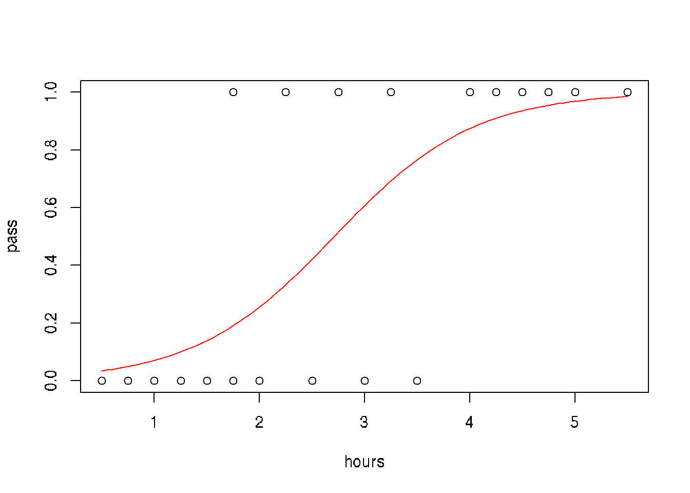

Chapter 30 Bayesian Statistics
library(ggjoy)## Loading required package: ggridges## The ggjoy package has been deprecated. Please switch
## over to the ggridges package, which provides the
## same functionality. Porting guidelines can be found
## here:
## https://github.com/clauswilke/ggjoy/blob/master/README.mdlibrary(ggExtra)
library(ggjoy)
library(tidyverse)## ── Attaching packages ────────────────── tidyverse 1.3.0 ──## ✓ tibble 3.0.4 ✓ purrr 0.3.4
## ✓ tidyr 1.1.2 ✓ stringr 1.4.0
## ✓ readr 1.4.0 ✓ forcats 0.5.0## ── Conflicts ───────────────────── tidyverse_conflicts() ──
## x dplyr::filter() masks stats::filter()
## x dplyr::lag() masks stats::lag()
## x purrr::lift() masks caret::lift()
## x MASS::select() masks dplyr::select()# prop_model function to visualize bayesian posterior distributions
prop_model <- function(data = c(), prior_prop = c(1, 1), n_draws = 10000,
show_plot = TRUE)
{
data <- as.logical(data)
proportion_success <- c(0, seq(0, 1, length.out = 100), 1)
data_indices <- round(seq(0, length(data), length.out = min(length(data) +
1, 20)))
post_curves <- map_dfr(data_indices, function(i) {
value <- ifelse(i == 0, "Prior", ifelse(data[i], "Success",
"Failure"))
label <- paste0("n=", i)
probability <- dbeta(proportion_success, prior_prop[1] +
sum(data[seq_len(i)]), prior_prop[2] + sum(!data[seq_len(i)]))
probability <- probability/max(probability)
tibble(value, label, proportion_success, probability)
})
post_curves$label <- fct_rev(factor(post_curves$label, levels = paste0("n=",
data_indices)))
post_curves$value <- factor(post_curves$value, levels = c("Prior",
"Success", "Failure"))
p <- ggplot(post_curves, aes(x = proportion_success, y = label,
height = probability, fill = value)) + geom_joy(stat = "identity",
color = "white", alpha = 1, panel_scaling = TRUE, size = 1) +
scale_y_discrete("", expand = c(0.01, 0)) + scale_x_continuous("Underlying proportion of success") +
scale_fill_manual(values = hcl(120 * 2:0 + 15, 100, 65),
name = "", drop = FALSE, labels = c("Prior ", "Success ",
"Failure ")) + theme_light(base_size = 18) +
theme(legend.position = "top")
if (show_plot) {
print(p)
}
invisible(rbeta(n_draws, prior_prop[1] + sum(data), prior_prop[2] +
sum(!data)))
}
# Generate 50 random binary data with P(1)=0.75
data <- sample(c(1, 0), prob = c(0.75, 0.25),
size = 50, replace = TRUE)
posterior <- prop_model(data)